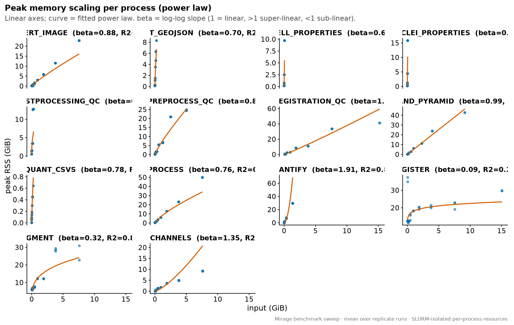
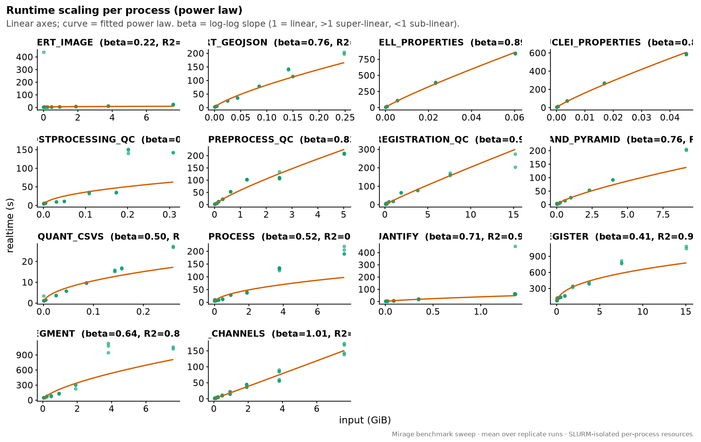
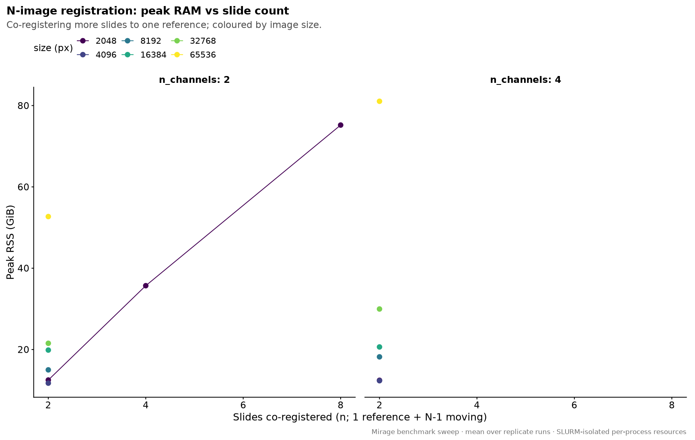
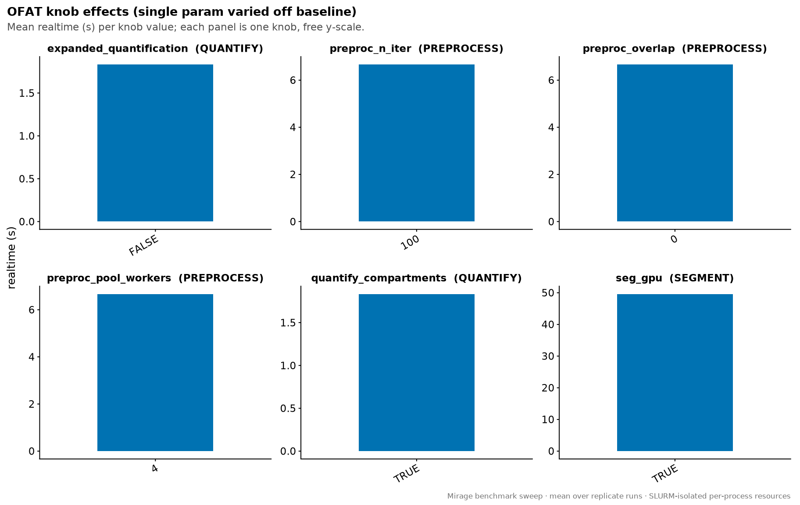
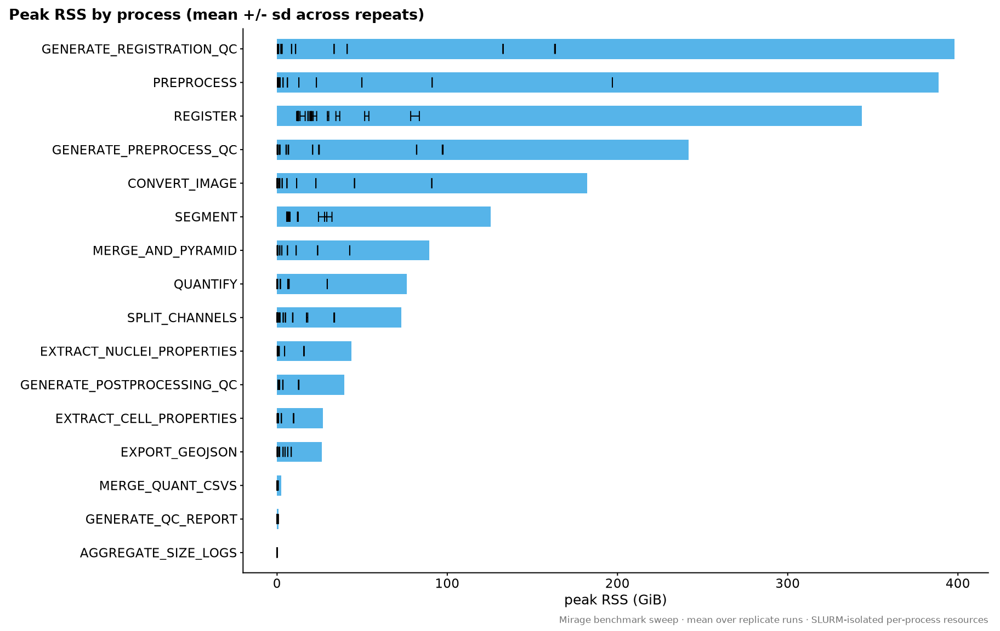
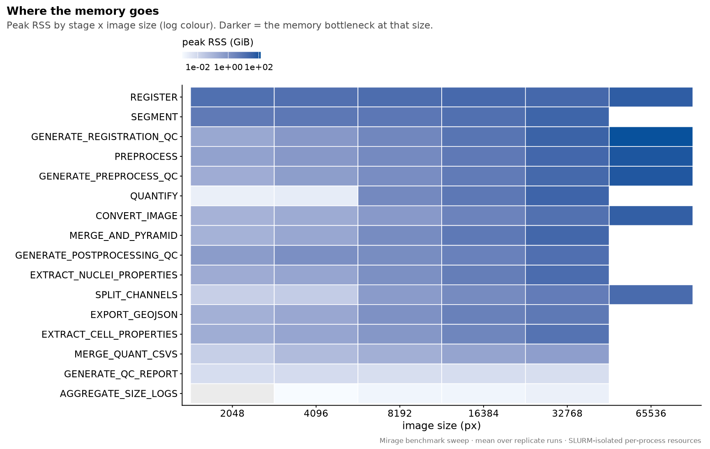
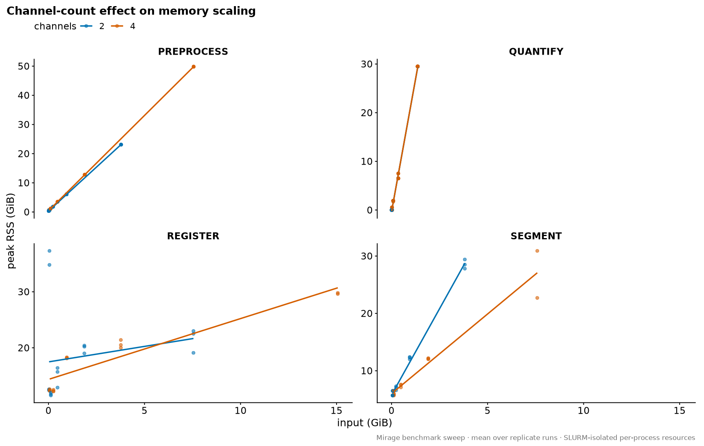
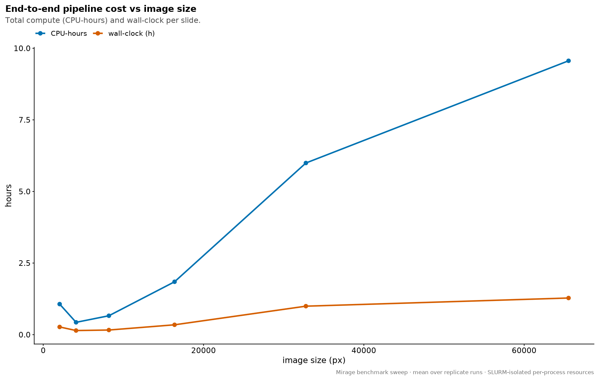
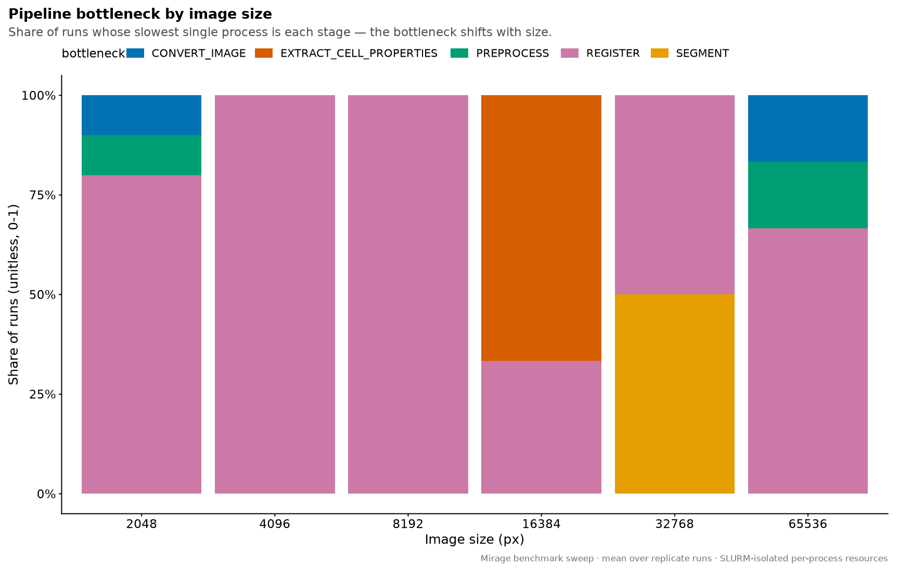

Last updated: 2026-08-12
Checks: 7 0
Knit directory: ihc_method/
This reproducible R Markdown analysis was created with workflowr (version 1.7.2). The Checks tab describes the reproducibility checks that were applied when the results were created. The Past versions tab lists the development history.
Great! Since the R Markdown file has been committed to the Git repository, you know the exact version of the code that produced these results.
Great job! The global environment was empty. Objects defined in the global environment can affect the analysis in your R Markdown file in unknown ways. For reproduciblity it’s best to always run the code in an empty environment.
The command set.seed(20260630) was run prior to running
the code in the R Markdown file. Setting a seed ensures that any results
that rely on randomness, e.g. subsampling or permutations, are
reproducible.
Great job! Recording the operating system, R version, and package versions is critical for reproducibility.
Nice! There were no cached chunks for this analysis, so you can be confident that you successfully produced the results during this run.
Great job! Using relative paths to the files within your workflowr project makes it easier to run your code on other machines.
Great! You are using Git for version control. Tracking code development and connecting the code version to the results is critical for reproducibility.
The results in this page were generated with repository version c5d0eaa. See the Past versions tab to see a history of the changes made to the R Markdown and HTML files.
Note that you need to be careful to ensure that all relevant files for
the analysis have been committed to Git prior to generating the results
(you can use wflow_publish or
wflow_git_commit). workflowr only checks the R Markdown
file, but you know if there are other scripts or data files that it
depends on. Below is the status of the Git repository when the results
were generated:
Ignored files:
Ignored: .RData
Ignored: .Rhistory
Ignored: .Rproj.user/
Ignored: data/
Ignored: output/figures/
Ignored: output/paired_deconv.rds
Ignored: renv/library/
Ignored: renv/staging/
Unstaged changes:
Modified: .gitignore
Modified: analysis/index.Rmd
Note that any generated files, e.g. HTML, png, CSS, etc., are not included in this status report because it is ok for generated content to have uncommitted changes.
These are the previous versions of the repository in which changes were
made to the R Markdown (analysis/benchmark_pipeline.Rmd)
and HTML (docs/benchmark_pipeline.html) files. If you’ve
configured a remote Git repository (see ?wflow_git_remote),
click on the hyperlinks in the table below to view the files as they
were in that past version.
| File | Version | Author | Date | Message |
|---|---|---|---|---|
| html | c5d0eaa | sceriff0 | 2026-08-12 | Revert ":wrench: built the site" |
| html | 70924d7 | sceriff0 | 2026-08-12 | :wrench: built the site |
| Rmd | 360ee92 | bolt3x | 2026-08-12 | :recycle: reorganise the workflowr site into four ordered parts |
Mirage image-processing pipeline benchmark —
resource scaling (memory, runtime, I/O), whole-pipeline
cost, and segmentation-method comparison from the SLURM sweep. Every
figure is built by sourcing code/benchmark_plots.R (a
vendored fork of mirage benchmarks/analysis/plots.R) and
rendered inline from the sweep CSVs — no PNGs on
disk.
Registration accuracy is not on this page. The
accuracy figures read the same param_matrix.csv columns as
the registration accuracy
page, from the same directory, so they are rendered there once rather
than on both pages. This page is resource, cost and segmentation.
Where the numbers come from. One real source image
is rescaled across a size axis and a channel axis; the Mirage pipeline
is run once per sweep cell (and per swept parameter) under Nextflow
tracing. Each run writes a trace.txt (per-process peak RSS,
runtime, CPU, and I/O byte counts) and a
size_logs/input_sizes.csv (per-process input bytes).
code/benchmark_plots.R joins those into
data/benchmark/measurements.csv —
one row per run-and-process — and the figures reduce
that table. proc is the process string with
everything up to the last : stripped. Per row we read:
peak_rss_gb = peak resident memory of that process (GiB, trace peak_rss)
realtime_s = wall time of that process (s, trace realtime)
read_gb = bytes read by that process (GiB, trace rchar) [I/O volume]
write_gb = bytes written by that process (GiB, trace wchar) [I/O volume]
input_gb = input size of that run (GiB, size_logs)plus every swept parameter and the label varied_axis
naming which knob that run varied off baseline. Size-scaling figures
keep only the runs whose varied_axis is a size axis,
size_axes = {baseline, scaling_grid, registration_grid, distributed_grid, target_px, n_channels}.
!!! warning “The sweep images are synthetic” Extra channels and the moving registration panels are synthesized from channel 0 (duplicate + intensity jitter + a fixed pixel shift), so any figure that touches channels or registration reflects a known synthetic offset, not biological difficulty. Read the channel figure (08) as the cost of more channel bytes, not of independent biological channels.
Axes are linear throughout (no log-log): the
power-law scaling figures fit the exponent in log space but draw the
fitted curve on linear axes, with the exponent β and
R² shown in each facet strip.
data/benchmark/ is a merge of two mirage output
sets. measurements.csv (the only required file),
resource_stats.csv and run_cost.csv come from
python -m benchmarks.analysis.make_figures, which writes
benchmarks/analysis/; param_matrix.csv,
runs_master.csv and segmentation_agreement.csv
come from python benchmarks/analysis/make_tables.py, which
writes benchmarks/paper_data/. Copy both sets into
data/benchmark/. Every file except
measurements.csv is optional — a figure needing an absent
file or column is silently skipped.
Derived columns (n_cells, instance_f1,
cell_count_ratio,
peak_rss_gb_mean/_std) are precomputed
upstream and only read here.
9 figure(s) built from benchmark data.Each figure below is preceded by its derivation note — the raw
columns it consumes and the exact reduction to the plotted value.
Figures whose optional CSV was not present in
data/benchmark/ are silently absent.
Peak resident memory peak_rss_gb (trace
peak_rss) vs run input size input_gb, one
panel per process, over size-varying runs only (varied_axis
in size_axes). Per process an OLS power law
log10(peak_rss) ~ log10(input_gb) is fit; the strip shows
the exponent β (1 = linear, >1 super-linear) and R². Linear axes,
curve = the fit.

Same construction as the memory-scaling figure but for wall time
realtime_s (trace realtime): OLS power law
log10(realtime) ~ log10(input_gb) per process, β and R² in
the strip, linear axes.

REGISTER peak RSS vs the number of co-registered slides.
Rows on
registration_grid/baseline/scaling_grid;
value = mean peak_rss_gb grouped by
(target_px, n_channels, n_register_images) (1 reference +
N-1 moving).

One-factor-at-a-time cost knobs. For each knob (preproc
iters/overlap/workers, seg GPU, quantify compartments/expansion), rows
whose varied_axis is that knob or baseline;
each panel = mean realtime_s per distinct knob value, free
y-scale.

Replicate spread from resource_stats.csv (rows with
n_reps > 1): bars are the precomputed
peak_rss_gb_mean per process, error bars span ±
peak_rss_gb_std across the repeats sharing a
config_id. This is the variance a single-shot sweep cannot
give.

Where the memory goes: mean peak_rss_gb per
(proc, target_px) on size_axes at
n_channels = 2, n_register_images = 2. Colour
is log-scaled (fill only, not an axis) so small and large stages are
both visible; darker = the memory bottleneck at that size.

Does 2 vs 4 channels shift memory scaling? peak_rss_gb
vs input_gb for REGISTER, PREPROCESS, SEGMENT, QUANTIFY on
size_axes, coloured by n_channels, with a
linear trend. Caveat: the extra channels are
synthesized (duplicate + jitter), so this is the cost of more
channel bytes, not of independent biological channels.

Whole-pipeline cost vs image size, from run_cost.csv on
size_axes: per target_px, mean
cpu_hours (total compute) and mean
wall_clock_s / 3600 (wall-clock per slide).

Which stage dominates, from run_cost.csv: count of runs
per (target_px, bottleneck_stage) drawn as a filled bar, so
each bar is the share of runs whose slowest single
process is that stage — the bottleneck shifts with image size.

instance_f1 / cell_count_ratio (segmentation
agreement) and the replicate mean/sd arrive precomputed in their CSVs.
The reductions benchmark_plots.R performs itself are the
log-space OLS (β, R²) and grouped means/shares (by process, image size,
or channel count).reg_displacement_um_p50, reg_dice_matched and
valis_non_rigid_D/_rTRE are read by
code/registration_accuracy_plots.R and rendered on registration accuracy, not
here.peak_rss_gb is one
process’s peak, not a whole-run aggregate. I/O
(read_gb/write_gb) is transferred
volume, not throughput.data/benchmark/.
R version 4.3.2 (2023-10-31)
Platform: x86_64-pc-linux-gnu (64-bit)
Running under: Rocky Linux 9.5 (Blue Onyx)
Matrix products: default
BLAS/LAPACK: FlexiBLAS OPENBLAS; LAPACK version 3.11.0
locale:
[1] LC_CTYPE=C.UTF-8 LC_NUMERIC=C LC_TIME=C.UTF-8
[4] LC_COLLATE=C.UTF-8 LC_MONETARY=C.UTF-8 LC_MESSAGES=C.UTF-8
[7] LC_PAPER=C.UTF-8 LC_NAME=C LC_ADDRESS=C
[10] LC_TELEPHONE=C LC_MEASUREMENT=C.UTF-8 LC_IDENTIFICATION=C
time zone: Europe/Rome
tzcode source: system (glibc)
attached base packages:
[1] stats graphics grDevices datasets utils methods base
other attached packages:
[1] scales_1.4.0 here_1.0.2 lubridate_1.9.5 forcats_1.0.1
[5] stringr_1.6.0 dplyr_1.2.1 purrr_1.2.2 readr_2.2.0
[9] tidyr_1.3.2 tibble_3.3.1 ggplot2_4.0.3 tidyverse_2.0.0
[13] workflowr_1.7.2
loaded via a namespace (and not attached):
[1] gtable_0.3.6 xfun_0.58 bslib_0.9.0 processx_3.9.0
[5] lattice_0.22-9 callr_3.7.6 tzdb_0.5.0 vctrs_0.7.3
[9] tools_4.3.2 ps_1.9.3 generics_0.1.4 parallel_4.3.2
[13] pkgconfig_2.0.3 Matrix_1.6-5 RColorBrewer_1.1-3 S7_0.2.2
[17] lifecycle_1.0.5 compiler_4.3.2 farver_2.1.2 git2r_0.33.0
[21] getPass_0.2-4 httpuv_1.6.12 htmltools_0.5.9 sass_0.4.10
[25] yaml_2.3.12 later_1.4.8 pillar_1.11.1 crayon_1.5.3
[29] jquerylib_0.1.4 whisker_0.4.1 cachem_1.1.0 nlme_3.1-163
[33] tidyselect_1.2.1 digest_0.6.39 stringi_1.8.7 labeling_0.4.3
[37] splines_4.3.2 rprojroot_2.1.1 fastmap_1.2.0 grid_4.3.2
[41] cli_3.6.6 magrittr_2.0.5 withr_3.0.3 promises_1.5.0
[45] bit64_4.8.2 timechange_0.4.0 rmarkdown_2.31 httr_1.4.7
[49] bit_4.6.0 otel_0.2.0 hms_1.1.4 evaluate_1.0.5
[53] knitr_1.51 viridisLite_0.4.3 mgcv_1.9-1 rlang_1.2.0
[57] Rcpp_1.1.1-1.1 glue_1.8.1 renv_1.2.3 rstudioapi_0.15.0
[61] vroom_1.7.1 jsonlite_2.0.0 R6_2.6.1 fs_2.1.0